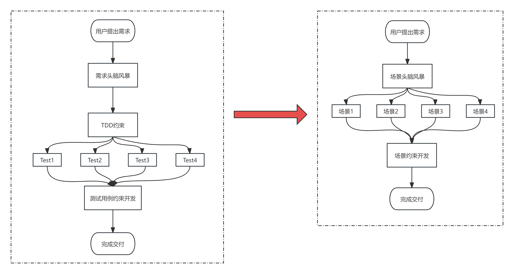
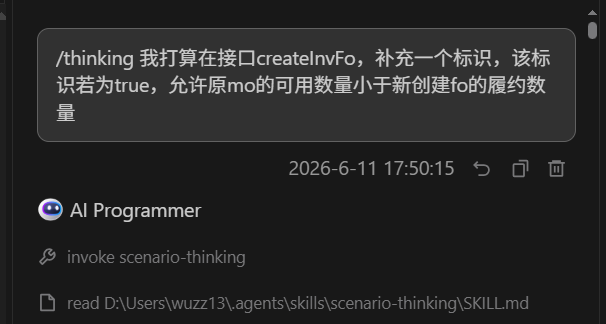
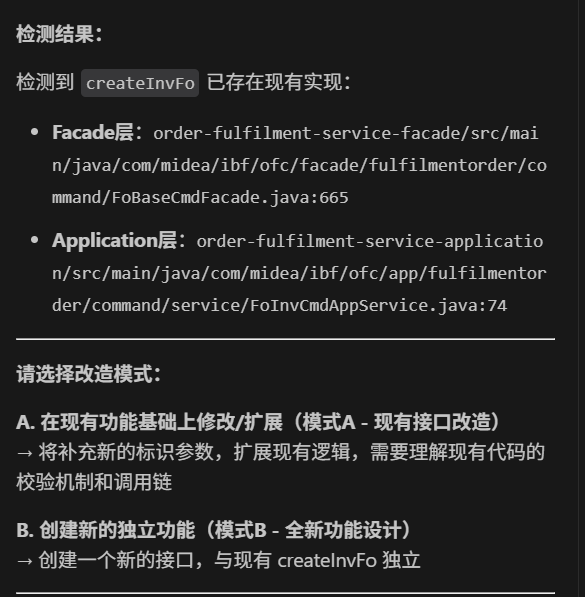
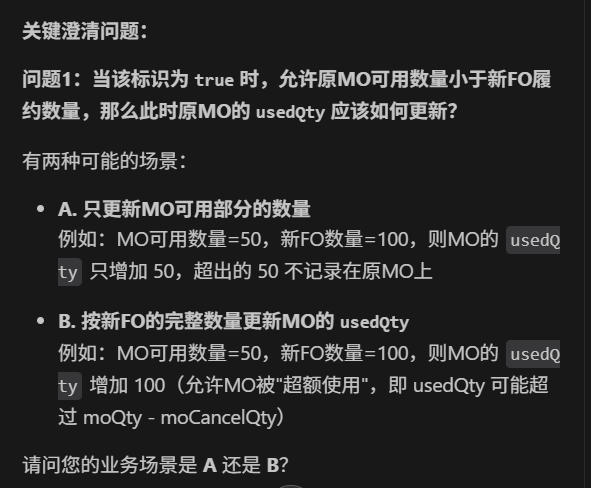
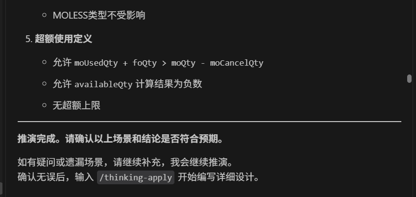

上一篇文章里，我整理了 OpenSpec 和 Superpowers 的组合方式：先把需求变成设计产物，再用流程纪律约束 AI 按步骤实现。
那套方式适合中等以上复杂度的需求，尤其是从 0 到 1 做一个新能力时，它能把 proposal、design、tasks、spec 都沉淀下来，后续实现和审查都有依据。
但实际开发里还有另一类很常见的任务：现有接口或现有方法上做一个看起来不大的二次改造。
比如只是新增一个标识、放开一个校验、调整一段数量计算、补一类特殊状态。直接让 AI 写代码，它可能马上动手；完整走一遍 OpenSpec，又显得有点重。这个中间地带，就很适合引入 scenario-thinking。
scenario-thinking 是什么
scenario-thinking 是一个偏分析和设计的 Agent Skill。它不急着生成代码，而是要求 AI 先做两件事：
1 | 第一步：穷举场景 |
它的核心理念可以概括成一句话：
1 | 先在纸上把所有边界情况过一遍，确认算法自洽，再写代码。 |
这和 TDD 有点像，但关注点不同。TDD 是用测试约束实现，scenario-thinking 是用业务场景和数值推演约束设计。对于金额计算、库存占用、状态流转、额度扣减、差量比对这类需求，很多 bug 不是代码语法问题，而是某个边界场景一开始就没想清楚。
所以 scenario-thinking 真正解决的是：
- 不让 AI 在需求描述还含糊时直接编码；
- 不让 AI 只覆盖“快乐路径”；
- 不让隐性业务约束藏在口头描述里；
- 不让实现阶段靠猜测补全边界条件。
它和上一篇流程的关系
如果说上一篇的 OpenSpec + Superpowers 是一套完整研发流程，那么 scenario-thinking 更像是它的轻量补充。

可以这样理解两者分工：
1 | OpenSpec + Superpowers： |
它不是要替代上一篇流程，而是补上一个更轻的入口。尤其当需求已经比较明确，但边界场景很多时，可以先用 scenario-thinking 把场景和算法推清楚，再把详设文档交给后续实现流程。
一个比较顺手的组合方式是：
1 | /thinking |
也就是说，scenario-thinking 产出的不是最终代码，而是后续编码的“约束材料”。
两个核心命令
scenario-thinking 主要有两个命令。
第一个是 /thinking，用于开始推演：
1 | /thinking 说明我要改哪个接口、哪个方法、什么业务规则 |
收到这个命令后，AI 不应该直接写代码，而是先进入场景分析流程。

第二个是 /thinking-apply，用于在推演结果确认后生成详细设计：
1 | /thinking-apply |
这一步会把前面确认过的场景、公式、边界、修改范围和注意事项合并成一个设计文档。后续实现时，AI 应该以这份文档为输入，而不是回到原始的一句话需求。
第一步：先判断是改造还是新建
/thinking 启动后，scenario-thinking 的第一步不是问业务问题，而是判断用户提到的目标是否已经存在。
它会从用户输入里提取可能的复用目标，例如：
1 | 接口路径 |
然后在项目里搜索这些目标。如果发现已有实现，就会让用户确认：
1 | A. 在现有功能基础上修改或扩展 |

这个步骤很重要。很多二次开发事故都不是因为 AI 不会写代码，而是因为它没弄清楚“这是扩展旧逻辑，还是另起炉灶”。如果是现有接口改造，它必须先读现有调用链、校验逻辑、数据结构和边界条件；如果是新功能，才可以从零构建模型。
我比较喜欢这个设计，因为它把一个容易被忽略的工程事实摆到了最前面：
1 | 同样一句需求，落到已有代码和全新代码里，风险完全不同。 |
第二步：一轮只问一个关键问题
进入推演后，AI 会开始澄清问题。这里最值得保留的一条规则是：每轮只问一个最关键的问题。
二次开发里，用户经常只说目标场景，却没有说完所有派生场景。比如“允许某种数量超过可用数量”，这句话至少会引出几个问题：
1 | 超过以后，已用数量应该按完整数量更新，还是只更新可用部分？ |
这些问题如果不问，AI 会自己选一个“看起来合理”的答案。但业务规则里最危险的，恰好就是这些看起来合理的默认选择。

比如一个数量改造场景里，核心公式可能是：
1 | availableQty = totalQty - usedQty - cancelledQty |
现在新增一个 allowOverUse 标识。如果它为 true，允许本次使用数量大于 availableQty。那超出的部分到底要不要写入 usedQty？
方案 A 是只更新可用部分：
1 | totalQty = 100 |
方案 B 是按完整请求数量更新：
1 | totalQty = 100 |
两个方案都能解释“允许超额”，但业务含义完全不同。前者像是“只记录可用消耗”，后者才是“允许被超额占用”。如果这个问题不在设计阶段问清楚，后面写再多测试也只能测试一个错误前提。
第三步：把场景分类，而不是只列例子
澄清完关键规则后，scenario-thinking 会构建场景分类体系。好的分类不是随便列几个例子，而是要覆盖正常、边界、异常、多轮和组合场景。
以“允许超额使用数量”这类需求为例，可以拆成这样：
| 场景类型 | 需要验证的问题 |
|---|---|
| 向后兼容 | 不传标识、标识为 false 时，旧逻辑是否完全不变 |
| 新逻辑主流程 | 标识为 true 且数量不足时，是否跳过原校验 |
| 边界值 | 可用数量为 0、刚好够、刚好不够、远超总量时怎么处理 |
| 混合明细 | 同一个请求中有的行允许超额，有的行严格校验时是否互不影响 |
| 特殊类型 | 不涉及原对象的特殊类型是否应该忽略该标识 |
| 多次引用 | 同一对象被多个明细引用时，数量是否按顺序累加 |
这就是 scenario-thinking 和普通问答最大的区别：它不满足于“这个例子怎么处理”，而是逼着 AI 建立一张场景地图。
第四步：每个场景都要完整推演
场景分类之后，还不能只写结论。scenario-thinking 要求每个场景都写出完整推演过程，尤其是数值变化。
一个合格的推演应该至少包含：
1 | 数据准备：before 状态是什么 |
举一个改写后的例子：
1 | 场景：允许超额，且当前可用数量不足 |
这个推演过程的价值，是让实现阶段没有发挥空间。AI 后面写代码时，不能再自己决定“负数是不是要截断为 0”，因为设计里已经明确负数是业务允许的结果。
第五步：用户确认后再生成详设
所有场景推演完以后，scenario-thinking 不会自动进入详细设计，而是要求用户确认。

确认无误后，再输入：
1 | /thinking-apply |
这一步生成的详设通常应该包含：
- 背景与问题描述；
- 前提与约束；
- 入参结构设计；
- 核心算法规格和伪代码；
- 与现有逻辑的衔接；
- 全场景推演；
- 修改范围清单；
- 实现注意事项；
- 推演汇总表。
这里我觉得最有价值的是三个部分。
第一是“前提与约束”。它把问答中确认过的业务规则收口，例如默认值如何处理、开关作用范围是什么、是否有上限、特殊类型是否受影响。
第二是“全场景推演”。这部分不要压缩，因为它就是后续写测试和审查实现的依据。
第三是“实现注意事项”。很多 bug 都藏在这里，比如 Boolean 的 null 处理、DTO 到领域对象的字段传递、同一对象多次引用时的累加顺序、旧数据反序列化兼容性。
实战案例
假设我们要改造一个订单占用接口，新增 allowOverUse 标识，允许请求数量超过当前可用数量。
第一步，触发推演：
1 | /thinking 我打算在接口 createAllocation 中新增 allowOverUse 标识。 |
第二步，确认复用模式。如果 AI 检测到 createAllocation 已有实现，选择“在现有功能基础上修改”。这会迫使它先读现有逻辑，而不是凭接口名猜。
第三步，回答关键澄清问题。比如：
1 | allowOverUse 是明细行级，而不是请求级。 |
第四步，让 AI 生成场景矩阵。一个最小但够用的矩阵可以是：
| 场景 | allowOverUse | availableQty | requestQty | 预期 |
|---|---|---|---|---|
| 旧逻辑正常 | false | 60 | 50 | 通过，usedQty 增加 50 |
| 旧逻辑拦截 | false | 10 | 50 | 抛出数量不足异常 |
| 新逻辑正常 | true | 60 | 50 | 跳过校验，usedQty 增加 50 |
| 新逻辑超额 | true | 10 | 50 | 通过，usedQty 增加 50，可用变负 |
| 可用为 0 | true | 0 | 30 | 通过，可用变负 |
| 未传标识 | null | 10 | 50 | 按 false 处理，抛异常 |
| 混合明细 | true/false | 10/150 | 50/30 | 每行独立判断 |
第五步，确认推演后生成详设：
1 | /thinking-apply |
第六步，拿详设进入实现。这里可以接上一篇的流程：根据详设补测试，按修改范围最小化实现，最后做增量代码审查。
什么时候适合用 scenario-thinking
我会优先在这些场景使用它：
- 改造已有接口或已有方法；
- 业务规则看起来简单，但边界很多；
- 涉及金额、数量、额度、库存、状态机；
- 有“旧逻辑保持不变，新逻辑部分放开”的兼容要求；
- 需要明确 null、0、负数、极大值、混合明细等边界；
- 用户自己也不确定所有派生场景，需要 AI 帮忙追问。
反过来，这些场景不太需要它：
- 纯文案修改；
- 简单字段透传且无业务分支；
- 明确的 CRUD 页面或接口；
- 已经有完整测试覆盖的小重构；
- 需求目标本身还很发散，连业务对象都没确定。
一句话判断就是：
1 | 如果这个需求最难的地方是“写代码”，先走实现流程； |
它真正约束了什么
scenario-thinking 表面上是在列场景，实际上是在约束 AI 的三个习惯。
第一，约束“马上开始写”。看到 /thinking 后，AI 的第一动作应该是理解、搜索、确认和推演，而不是编辑代码。
第二，约束“只覆盖主流程”。它要求正常、边界、异常、多轮、组合场景都被看见，尤其是旧逻辑兼容和新逻辑核心场景要同时覆盖。
第三，约束“用模糊词带过”。每个数字都要能追溯到公式，结论不能只写“符合预期”，必须说明为什么符合。
这也是它适合作为上一篇补充的原因。OpenSpec 和 Superpowers 让 AI 的开发流程更稳，scenario-thinking 则让 AI 在进入开发前先把复杂业务规则想清楚。前者解决“怎么交付”，后者解决“到底该交付什么行为”。
总结
上一篇讲的是完整流程：OpenSpec 产出规范，Superpowers 约束实现。
这一篇补充的是前置推演：scenario-thinking 把现有逻辑改造里的隐性边界挖出来。
我现在更愿意把它放在二次开发的入口处：
1 | 先 /thinking，把场景问清楚、推演清楚； |
这样做不会让 AI 变得更“快”，但会让它少走很多看似聪明的弯路。对复杂业务系统来说，很多时候最省 token 的办法不是少写文档，而是别让错误前提进入代码。